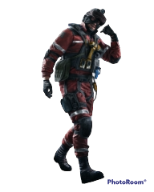
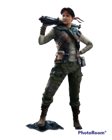
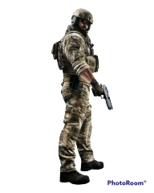
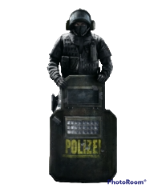
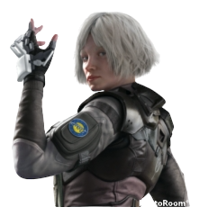
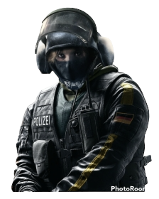
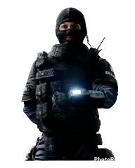
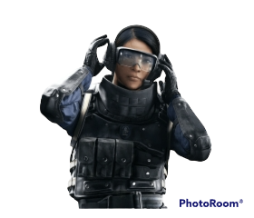

| Operator | Role | Loadout | Bio | Military Company | Operator Guide |
|---|---|---|---|---|---|
Ace  |
Hard Breacher | Selmas Aqua Breacher Ak-12 P9 Pistol Claymore |
Havard Haugland Born March 15th (Age 33) in Lardalsyri, Norway | NightHaven | Difficulty:Easy Speed: Two Health: 110 |
Amaru  |
Entry Fragger | Garra Hook G8A1 Lmg Hard Breacher Charge SMG-11 |
Azucena Rocio Quispe Born May 6th (Age 48) in Cojata, Peru | Asociacion de Patrimonio Cultural Arqueologico (APCA) |
Difficulty:Medium Speed:Two Health:110 |
BlackBeard  |
Angle Watcher | Rifle Shiled Mk17 CQB AR Deagle Claymore |
Craig Jenson Born March 12th (Age 32) in Bellevue, Washington | Navy SEALs | Difficulty:Easy Speeed:Two Health:110 |
Blitz  |
Entry Fragger | G52 Tactial sheild P12 Pistol Breach Charge |
Elias Kötz Born April 2nd (Age 37) in Bremen, Germany | Grenzschutzgruppe 9 der Bundespolizei (GSG 9) |
Difficulty:Hard Speed:Two Health:110 |
Iana  |
Intel Gather | gemini Replicator G36C AR MK19mm Pistol Frag Grenade |
Nienke Meijer Born August 27th (Age 35) in Katwijk, the Netherlands | REU | Difficulty:Easy Speed:Two Health:110 |
Iq  |
Intel Gather | Electroincs Detector 552 Commando P12 pistol Breach Charge |
Monika Weiss Born August 1st (Age 38) in Leipzig, Germany | Grenzschutzgruppe 9 der Bundespolizei (GSG 9) |
Difficulty:Hard Speed:Three Health:100 |
Twitch  |
Hard Breach Support | Shock Drone F2 AR P9 pistol Claymore |
Emmanuelle Pichon Born October 12th (Age 28) In Nancy, France | National Gendarmerie Intervention Group (GIGN) |
Difficulty:Medium Speed:Two Health:110 |
Ying  |
Entry/Disruptor | Candela Charge T-95 LSW LMG Q-929 pistol Hard Breach Charge |
Siu Mei Lin Born May 12th (Age 33) in Hong Kong, Central | Special Duties Unit (SDU) |
Difficulty:Medium Speed:Two Health:110 |